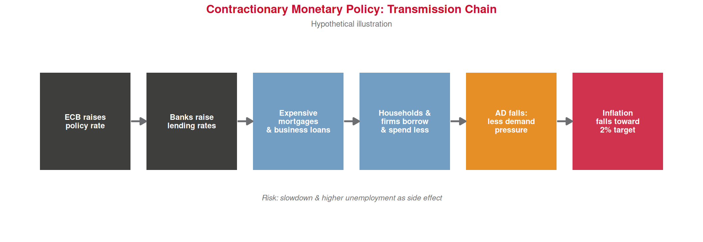
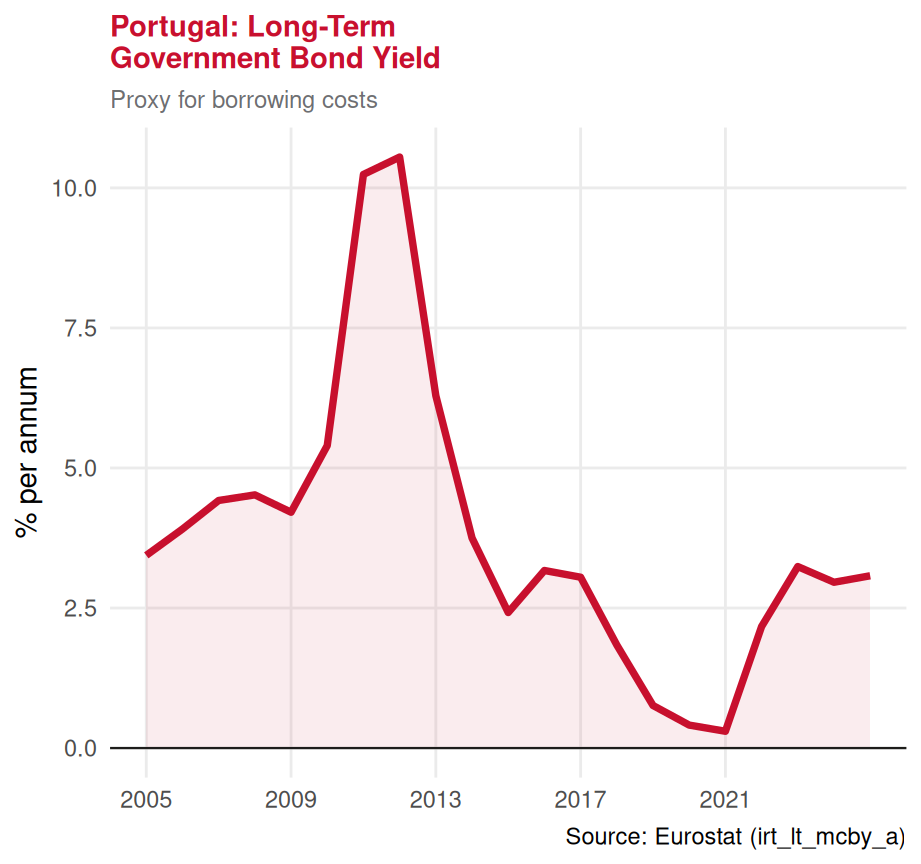
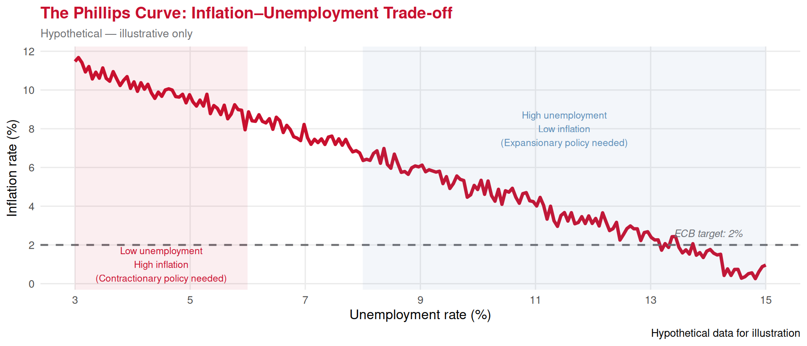

Central Banks & Monetary Policy
Lecture 24: Expansionary and Contractionary Monetary Policies
Paulo Fagandini
2026
Recap: Inflation ⏪
Last lecture we studied inflation — the general, sustained rise in prices:
✅ Measured by the CPI / HICP — a fixed consumer basket repriced each period
✅ Three causes: demand-pull, cost-push, monetary expansion
✅ Consequences: erodes purchasing power, savings, competitiveness, social stability
✅ The ECB targets inflation close to but below 2%
👉 Today: who fights inflation? And how?
The answer is Central Banks — and the tool is monetary policy.
Part I: What is a Central Bank?
The Central Bank 🏦
Central Bank is the institution responsible for managing a country’s (or currency area’s) money supply and interest rates. It acts as the “bank of banks” and the ultimate guardian of monetary stability.
Key Central Banks:
🇪🇺 ECB — European Central Bank Serves all 20 Eurozone countries, including Portugal
🇺🇸 Federal Reserve (the Fed) USA
🇬🇧 Bank of England United Kingdom
🇯🇵 Bank of Japan Japan
Core functions:
1️⃣ Set interest rates (the price of money)
2️⃣ Control the money supply
3️⃣ Supervise and regulate commercial banks
4️⃣ Act as lender of last resort in financial crises
5️⃣ Maintain financial stability
👉 For Portugal: the ECB makes monetary policy decisions. The Banco de Portugal implements them locally.
Central Bank Independence 🏛️
Central banks are deliberately kept independent from governments.
Why? 🤔
Politicians face election pressure to stimulate growth (cut rates, print money) even when this would cause inflation.
An independent central bank can make unpopular but necessary decisions — like raising rates to fight inflation — without fear of being removed.
💡 The time inconsistency problem:
Governments have incentives to promise low inflation, then inflate away their debts once people have locked in wage contracts. An independent CB makes such commitments credible.
ECB Mandate
The primary objective of the ECB is to maintain price stability — defined as inflation close to but below 2% over the medium term.
Secondary: support the general economic policies of the EU (growth, employment) — without prejudice to price stability.
📆 The ECB was established in 1998 and took over monetary policy for the Eurozone in 1999 when the euro was launched.
Part II: Monetary Policy Tools
The Key Tool: Interest Rates 🎛️
The main instrument of monetary policy is the policy interest rate — the rate at which commercial banks borrow from the central bank overnight.
How it works — the transmission chain:
1️⃣ ECB sets the policy rate
2️⃣ Commercial banks adjust their lending rates to businesses and households
3️⃣ Higher rates → more expensive credit → less borrowing → less spending and investment
4️⃣ Lower rates → cheaper credit → more borrowing → more spending and investment
5️⃣ Changes in spending affect output, employment, and prices
⌛ The full effect takes 12–18 months to work through the economy — monetary policy acts with long and variable lags.
Three ECB rates (the “rate corridor”):
| Rate | Purpose |
|---|---|
| Deposit facility | Banks park excess reserves here overnight |
| Main refinancing | Core policy rate — banks borrow for 1 week |
| Marginal lending | Emergency overnight borrowing |
Other Tools: Beyond Interest Rates 🧰
🖨️ Quantitative Easing (QE)
The central bank buys government bonds and other assets, injecting money directly into the financial system.
Used when interest rates are already near zero (the “zero lower bound”).
ECB deployed massively after 2012 (Draghi: “whatever it takes”) and again in 2020 (COVID).
🏦 Reserve Requirements
Commercial banks must hold a fraction of their deposits as reserves (not lent out).
Raising reserve requirements → banks lend less → money supply shrinks.
Used more in developing economies — ECB relies mainly on interest rates.
📣 Forward Guidance
The central bank communicates its future intentions clearly to influence expectations today.
If businesses expect rates to stay low for 2 years, they invest now.
If they expect rate rises, they may wait.
💡 Expectations themselves affect the economy — the CB manages them deliberately.
Part III: Expansionary vs Contractionary Policy
The Two Directions 🔄
Expansionary monetary policy — used when the economy is slowing or in recession: Lower interest rates + increase money supply → cheaper credit → stimulate consumption and investment → boost output and employment
Contractionary monetary policy — used when inflation is too high: Raise interest rates + reduce money supply → expensive credit → reduce consumption and investment → cool demand → bring inflation down
⚠️ Neither is free of trade-offs:
- Expansionary risks fuelling inflation if applied too aggressively or for too long
- Contractionary risks triggering recession and rising unemployment
Expansionary Policy — The Mechanics 📈
Scenario: Portugal (and the Eurozone) enters recession. Unemployment rises. Inflation is below target.
Contractionary Policy — The Mechanics 📉
Scenario: Inflation surges to 8% (as in 2022). The ECB must act.

Side-by-Side Comparison ⚖️
| 📈 Expansionary | 📉 Contractionary | |
|---|---|---|
| When used | Recession, low inflation, high unemployment | High inflation, overheating economy |
| Action | ⬇️ Cut interest rates / 🖨️ increase money supply | ⬆️ Raise interest rates / reduce money supply |
| Effect on credit | Cheaper — more borrowing | More expensive — less borrowing |
| Effect on spending | ⬆️ Rises | ⬇️ Falls |
| Effect on inflation | ⬆️ Rises (risk) | ⬇️ Falls (goal) |
| Effect on employment | ⬆️ Improves | ⬇️ May worsen |
| Risk | Inflation if overdone | Recession / unemployment |
Part IV: The ECB in Action
ECB Interest Rates — History 🇵🇹

Reading the Rate History 🔍
The chart tells the story of modern monetary policy in four acts:
1️⃣ 1999–2008: Rates moderate (2–5%), Eurozone growing
2️⃣ 2008–2015: Aggressive cuts after Global Financial Crisis. Near-zero by 2012. Asset purchase programmes begin.
3️⃣ 2015–2022: Negative territory — ECB charges banks to park money, incentivising lending. Extraordinary accommodation to fight deflation risk.
4️⃣ 2022–2024: Fastest rate-hiking cycle in ECB history. Inflation hit 10%+ across the Eurozone. ECB raised rates from -0.5% to 4% in just 14 months.
💡 For tourism:
- Near-zero rates (2015–2022) made hotel investment loans very cheap → boom in new capacity
- Rapid rate rises (2022–2024) increased mortgage costs → less household spending power → potential impact on holiday budgets
Interest Rates and Tourism Investment 🏨
How monetary policy affects tourism supply:
⬇️ Low interest rates (expansionary):
- Hotel construction loans become affordable
- Tour operators can invest in new equipment/fleets
- Airbnb hosts finance renovations cheaply
- New capacity is built → tourism supply expands
⬆️ High interest rates (contractionary):
- Debt servicing costs rise for existing hotel loans
- New investment projects shelved
- Some leveraged hotel groups face financial stress
- Supply expansion slows or reverses
👉 The 2015–2022 low-rate era directly contributed to the tourism boom and hotel construction wave in Lisbon, Porto, and the Algarve.

Part V: Monetary Policy Trade-offs
The Impossible Trinity 🚩
A country cannot simultaneously have all three of:
🌐 Free capital flows
Money moves freely across borders
💱 Fixed exchange rate
Stable currency value vs other currencies
🎛️ Independent monetary policy
Set own interest rates freely
👉 Portugal’s situation: By joining the euro, Portugal gave up 3️⃣ (independent monetary policy) in exchange for 1️⃣ (free capital flows within EU) and 2️⃣ (stable exchange rates within the Eurozone).
The ECB sets rates for the whole Eurozone — Portugal cannot cut rates on its own if it is in recession while Germany is overheating.
The Inflation–Unemployment Trade-off Revisited ⚖️

👉 Contractionary policy (fighting inflation) moves the economy right along the curve — lower inflation but higher unemployment. Central bankers navigate this trade-off constantly.
Monetary Policy and Tourism — Putting it Together 🏖️
Expansionary policy → tourism boost:
⬇️ Low mortgage rates → households have more disposable income → more holiday spending
⬇️ Cheap business credit → hotels invest in new capacity and renovation
💱 Potential currency depreciation → destination becomes more attractive to foreign visitors
📈 Economic recovery → rising incomes → more tourism demand
Example: ECB near-zero rates 2015–2019 coincided with record tourism years in Portugal
Contractionary policy → tourism headwinds:
⬆️ High mortgage rates → household budgets squeezed → discretionary travel cut first
⬆️ Expensive hotel loans → investment pauses, some projects cancelled
💱 Potential currency appreciation → destination becomes pricier for non-euro visitors
📉 Slowdown risk → uncertainty → consumers postpone holidays
Example: ECB rate hikes 2022–2023 raised Euribor sharply → many Portuguese homeowners’ mortgage payments increased by €200–400/month → less money for holidays
Exercises
📝 Exercise 1 — Multiple Choice
The ECB raises its policy interest rate from 2% to 3.5% in response to rising inflation. Which of the following best describes the expected chain of effects?
(A) Banks lower their lending rates → households borrow more → consumption rises → inflation falls
(B) Banks raise their lending rates → credit becomes more expensive → spending and investment fall → inflation falls
(C) The money supply automatically increases → purchasing power rises → inflation falls
(D) Government spending rises → aggregate demand increases → prices stabilise
Correct answer: (B)
This is the contractionary monetary policy transmission chain. Higher ECB rates → higher commercial lending rates → more expensive credit → less borrowing, spending, and investment → reduced aggregate demand → inflation falls. Option A describes expansionary policy (opposite direction). Options C and D are incorrect descriptions of the mechanism.
📝 Exercise 2 — Multiple Choice
Portugal joined the Eurozone in 1999. In 2024, Portugal’s unemployment rate is 6.5% while Germany’s is 3.1% and inflation is higher in Portugal than in Germany. Which statement best describes Portugal’s monetary policy constraint?
(A) Portugal can cut interest rates independently to boost its economy
(B) The ECB will set a rate that suits Portugal specifically, as it is the most affected country
(C) Portugal cannot set its own interest rates — the ECB sets a single rate for the whole Eurozone, which may not be optimal for every member
(D) Portugal can use quantitative easing independently to stimulate its own economy
Correct answer: (C)
This is the “one size fits all” problem of a currency union. The ECB sets a single rate for all 20 Eurozone members based on aggregate conditions. A rate optimal for Germany may be too tight for Portugal (if Portugal needs stimulus) or too loose (if Portugal is overheating while Germany is not). Portugal gave up independent monetary policy when it adopted the euro.
📝 Exercise 3 — Open Question
In 2022, Eurozone inflation surged to over 8%, driven primarily by energy and food price shocks following the war in Ukraine. The ECB responded by raising its policy rate from -0.5% in June 2022 to 4.0% by September 2023 — the fastest rate-hiking cycle in its history.
(a) Classify this ECB action as expansionary or contractionary monetary policy, and explain why this classification applies.
(b) Describe the transmission mechanism through which this rate increase was intended to reduce inflation. Identify at least three steps in the chain.
(c) A hotel group in Lisbon had taken on €20 million in variable-rate debt to finance a new property, at an interest rate of Euribor + 1%. When Euribor was -0.3%, the annual interest bill was approximately €140,000. After the rate hike cycle, Euribor reached 3.9%. Calculate the new annual interest bill and comment on the implications for the hotel group’s investment decisions.
Solution
(a) This is contractionary monetary policy. The ECB raised rates and implicitly tightened financial conditions. The goal was to reduce aggregate demand and bring inflation back toward the 2% target by making credit more expensive and slowing borrowing and spending. Contractionary policy is appropriate when inflation is above target, as it was (8% >> 2%).
(b) Transmission chain: (1) ECB raises policy rate → (2) commercial banks raise their lending rates (mortgages, business loans, consumer credit) → (3) households face higher mortgage payments, reducing disposable income → (4) businesses face higher borrowing costs, reducing investment → (5) aggregate demand falls → (6) less pressure on prices → inflation declines toward target. Additional: (7) higher rates may strengthen the euro → imports become cheaper → imported inflation falls.
(c) New interest rate = Euribor (3.9%) + 1% = 4.9%
New annual interest bill = €20,000,000 × 4.9% = €980,000
Increase: €980,000 − €140,000 = €840,000 more per year (~6× higher)
Implications: The hotel group’s fixed costs have risen dramatically. At the margin, this makes new investment projects less viable (higher hurdle rate), may force the group to raise room prices (contributing to tourism inflation), and could threaten financial viability if occupancy falls. It also illustrates why cheap money during 2015–2022 drove the hotel construction boom — and why the rate normalisation slowed it.
Summary 📚
Today we covered:
✅ Central banks — their role, independence, and mandate (ECB: ~2% inflation)
✅ The main tool: policy interest rates and how they transmit through the economy
✅ Other tools: QE, reserve requirements, forward guidance
✅ Expansionary policy — cut rates, stimulate growth (risk: inflation)
✅ Contractionary policy — raise rates, fight inflation (risk: recession)
✅ The ECB rate cycle: near-zero 2015–2022 → fastest hike cycle in history 2022–2024
✅ The impossible trinity — Portugal gave up independent monetary policy to join the euro
✅ How all of this flows through to tourism investment and demand
Next lecture (Lecture 25):
🧾 Fiscal policy — the government’s other lever: taxes and public spending
Thank You! 👋
Questions?
📧 paulo.fagandini@ext.universidadeeuropeia.pt
Next class: Wednesday, May 21st, 2026

Economics of Tourism | Lecture 24